DeltaV Operate experts
The DeltaV experts are a subset of the experts in the
Command category. They can be accessed by clicking the individual expert
buttons on the DeltaV Tools button bar. They can also be accessed by opening
the Task Wizard (using the
 button). On the Task wizard
dialog box, select Command as the task category, and then scroll to find the
DeltaV expert you wish to use. After selecting the expert, click the Perform
Task button. (Be sure that a shape or a data link is selected on your picture
before you attempt to use an expert.)
button). On the Task wizard
dialog box, select Command as the task category, and then scroll to find the
DeltaV expert you wish to use. After selecting the expert, click the Perform
Task button. (Be sure that a shape or a data link is selected on your picture
before you attempt to use an expert.)
Open Picture Expert
Use the Open Picture Expert to open a picture as a pop-up on an existing picture. Remember, you must select a shape before using an expert.
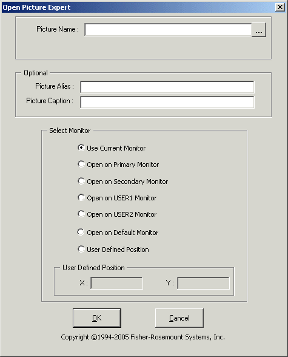
Picture Name - Enter the name of the picture that you want to open as a pop-up picture. Click the browse button (...) to see all of the pictures that are available to you.
Picture Alias - Enter an optional alias for this picture. An alias is useful if you want to group pictures into categories and comes in handy with the Close Picture Expert. Suppose that you have three or four pictures of tanks that are all open at the same time. If you give each of these pictures an alias such as Tanks, you can use the Close Picture Expert to close all pictures with the alias Tanks. The use of an alias saves operators from having to close three or four separate pictures.
Picture Caption - Enter an optional caption for the picture. The caption appears in the upper left-hand corner of the picture when the picture is open. A caption helps you to find a picture when you have many open pictures.
Select Monitor - Select the monitor on which to open the picture. If using multiple monitors (from two to four monitors are supported), you can designate a specific monitor. If using one monitor, you select Current Monitor.
The monitor options are as follows:
Use Current Monitor - The picture always opens on the monitor currently in use. This means the popup will open on top of a current picture. Select this option if you are using a single monitor workstation.
Open on Primary Monitor - The picture always opens on the Primary Monitor as designated by the monitor configuration (refer to the monitor installation and configuration instructions).
Open on Secondary Monitor - The picture always opens on the Secondary Monitor as designated by the monitor configuration (refer to the monitor installation and configuration instructions).
Open on USER1 Monitor - The picture always opens on the monitor designated as USER1 (refer to the monitor installation and configuration instructions).
Open on USER2 Monitor - The picture always opens on the monitor designated as USER2 (refer to the monitor installation and configuration instructions).
Open on Default Monitor - The picture always opens on the monitor designated as Default (refer to the monitor installation and configuration instructions).
Replace Picture Expert
Use the Replace Picture Expert to replace the main picture with another main picture. The Replace Picture Expert replaces the last opened picture when it is used with an alias.
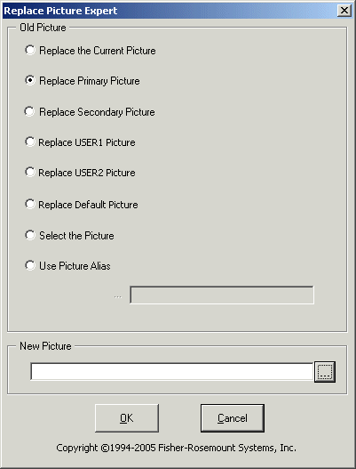
Replace the Current Picture - Replaces the current picture with the picture specified in the New Picture field. Select this option on single monitor workstations.
Replace Primary Picture - If you are running multiple (from two to four are supported) monitor workstations, replaces the picture on the Primary Monitor with the picture specified in the New Picture field. On single monitors it replaces the current picture with the picture specified in the New Picture field.
Refer to the multiple monitor installation and configuration documentation for information on designating the monitors.
Replace Secondary Picture - If you are running multiple monitor workstations, replaces the picture on the Secondary Monitor with the picture specified in the New Picture field. On single monitors replaces the current picture with the picture specified in the New Picture field.
Replace USER1 Picture - If you are running multiple monitor workstations, replaces the picture on the USER1 Monitor with the picture specified in the New Picture field.
Replace USER2 Picture - If you are running multiple monitor workstations, replaces the picture on the USER2 Monitor with the picture specified in the New Picture field.
Replace Default Picture - If you are running multiple monitor workstations, replaces the picture on the designated Default Monitor (as configured) with the picture specified in the New Picture field.
Select the Picture - Activates the Select a Picture field. In the Select a Picture field, type the name of the picture that you want to replace or click the browse button (...) to see all of the pictures that are available to you. The picture typed into the Select a Picture field is replaced with the picture specified in the New Picture field.
Use Picture Alias - Activates the Enter Picture Alias field. In the Enter Picture Alias field, type the alias name for the pictures that you want to replace. Remember, the Replace Display Expert replaces only the last opened picture when an alias is used. Refer to the discussion of alias in Open Picture Expert.
New Picture - Enter the name of the picture to replace the old picture or click the browse button (...) to see all of the pictures that are available to you.
Close Picture Expert
Use the Close Picture Expert to close a pop-up picture. Remember, if you use an alias, you can close multiple pictures with that alias name.
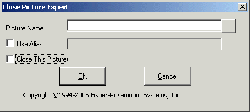
The Close Picture Expert will not close the main picture, Toolbar pictures, or Alarm Banner pictures.
Picture Name - Enter the name of the picture that you want to close. Click the browse button (...) to see all of the pictures that are available to you.
Use Alias - Enter the alias name for the pictures to be closed. Refer to the discussion of alias in Open Picture Expert for more information.
Close This Picture - Closes the current picture.
Open Faceplate Expert
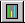
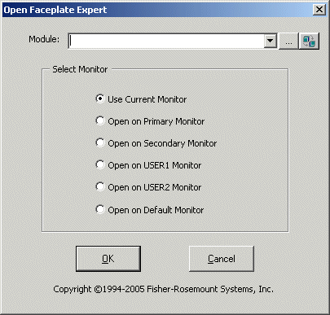
Module - Enter the module for the faceplate that you want to open. Click the browse button (...) to see all of the modules that are available to you.
Select Monitor - Select the monitor on which to open the picture. If using multiple monitors (from two to four monitors are supported), you can designate a specific monitor. If using one monitor, you select Current Monitor.
The monitor options are as follows:
Use Current Monitor - The picture always opens on the monitor currently in use. This means the popup will open on top of a current picture. Select this option if you are using a single monitor workstation.
Open on Primary Monitor - The picture always opens on the Primary Monitor as designated by the monitor configuration (refer to the monitor installation and configuration instructions).
Open on Secondary Monitor - The picture always opens on the Secondary Monitor as designated by the monitor configuration (refer to the monitor installation and configuration instructions).
Open on USER1 Monitor - The picture always opens on the monitor designated as USER1 (refer to the monitor installation and configuration instructions).
Open on USER2 Monitor - The picture always opens on the monitor designated as USER2 (refer to the monitor installation and configuration instructions).
Open on Default Monitor - The picture always opens on the monitor designated as Default (refer to the monitor installation and configuration instructions).
Open PHV Expert
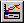
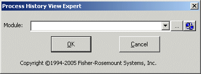
Module - Click the down arrow and select a module or click the browse button (...) to see all of the modules that are available to you.
Data Entry Expert
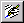
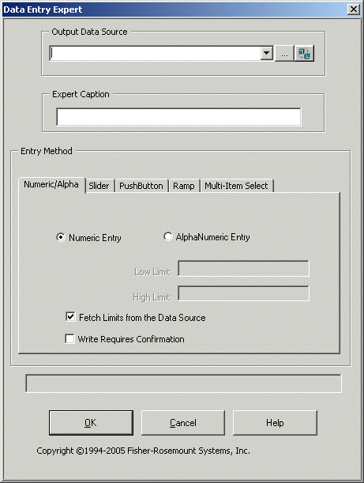
Output Data Source - Enter a source for the data link or click the down arrow and select a source. Click the browse button (...) to see all of the modules that are available to you.
Entry Method - Select a data entry method by clicking one of the tabs. Then fill in the required field information and select other options for the data entry method chosen.
Message/Status Field- This field (above the OK and Cancel buttons) displays any pertinent messages regarding the data you have entered on the form. For example, if a numeric value is out of range for the selected data source, that message is displayed in this field.
OK- Applies and saves any changes you have made and then closes this expert.
Cancel- Closes this expert without saving any changes you have made.
You can create the following types of data entry objects by selecting the appropriate tab and entering the necessary information:
Numeric/Alphanumeric - Allows you to create a numeric or alphanumeric data entry type object.
Slider - Allows you to create a slider bar data entry type object.
Push Button - Allows you to create a push button data entry type object.
Ramp - Allows you to create a ramp up/down data entry type object.
Multi-Item Select - Allows you to create a data entry object with multiple items to select.
Open Multiple Pictures Expert
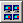
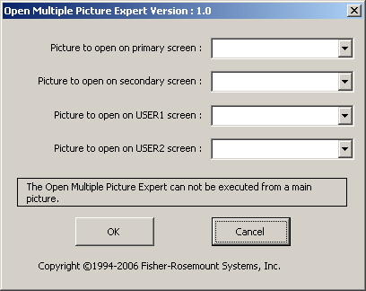
Picture to open on primary screen - Enter the picture name or select from the drop-down list of pictures. This picture will open on the monitor configured as Primary. (Refer to the monitor installation and configuration instructions.)
Picture to open on secondary screen - Enter the picture name or select from the drop-down list of pictures. This picture will open on the monitor configured as Secondary. (Refer to the monitor installation and configuration instructions.)
Picture to open on USER1 screen - Enter the picture name or select from the drop-down list of pictures. This picture will open on the monitor configured as USER1. (Refer to the monitor installation and configuration instructions.)
Picture to open on USER2 screen - Enter the picture name or select from the drop-down list of pictures. This picture will open on the monitor configured as USER2. (Refer to the monitor installation and configuration instructions.)